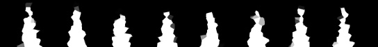

(a collection of interesting random songs)
- Diamond In The Dark - Liam Gallagher
- Hospital - Madison Cunningham
- Deadly Valentine - Charollete Gainsbourg
- Resurection - Planet Perfecto Knights
- Revolve - Dark Sky
- Playtime - Jimpster
- Hold On, Hold On - Neko Case
- Nature Of The Flow - King Kong
- Heather - Abraham
- An Ending - High On Isra
- Clear Day - Hope Sandoval & Warm Inventions
- Ponto Sem Retorno - Cool Hipnoise
Artist : Liam Gallagher
...There's a fire in the sky, And baby, there's a red dawn in my eyes, And all the meanings got so twisted since you've gone, And I guess I'll hope you're fine, But really, you know, I hope you're crying, And there's a million things to say since you've been gone, Come on, I'm shining like a diamond in the dark...
Artist : Madison Cunningham
...Even heartache looks so easy, To a pair of grievin' eyes, I am always one man down, I am always one man down, And dressed up, I am an antenna, A feeding tube and a hard drive, Entertaining myself to death, To maintain some sort of life...
Artist : Charollete Gainsbourg
...Damn! Can't even remember my name, You are my thing, I'm my own shadow, You are my little hurricane, Pictures are gently left behind me, Somewhere a face that I can't find, You are my deadly valentine...
Artist : Planet Perfecto Knights
(Instrumental)
Artist : Dark Sky
(Instrumental)
Artist : Jimpster
...I should be in the main theme, Born to compete, you should know me, 'Cause I'm not a fool, it's the truth for real, I know how to act all the way that I feel, I've been waiting for you, The things I believe that are almost true, Once for all you come marching through, I could live on a big rig, Born in the flash of a simple mistake, Itch like a kid for the right time to steal, It's over so fast you never know how to feel, So I'll hold onto you, If the things I believe are almost true, Once for all you wanted me too, Come a little closer, Stare a little longer like competitors do, 'Cause this fight's forever...

Artist : Neko Case
I leave the party at 3 a.m., ...Alone, thank God, With Valium from the bride, It's the devil I love, it's the devil I love, And that's as funny as real love, And that's as real as true love, That echo chorus lied to me with its, Hold on, hold on, hold on, hold on...
Artist : King Kong
(lyrics)
Artist : Abraham
(lyrics)
Artist : High On Isra
(lyrics)
Artist : Hope Sandoval & Warm Inventions
...Gonna find all your trouble, Gonna send them away, Gonna make you feel happy, Gonna be what you say, It's a clear, day out, It's a clear, day out...
Artist : Cool Hipnoise
...Há tanto que o tempo te deixou, como se te esquecesses, de tudo o que passou, de tudo o que tiveste, Tens um nome e uma morada, como toda a gente, mas saltaste uma muralha, que agora te defende(x2), Estás num ponto sem retorno, No dia em que te deixares levar, Embalado pelo sonho, E amar aquilo que encontrares...